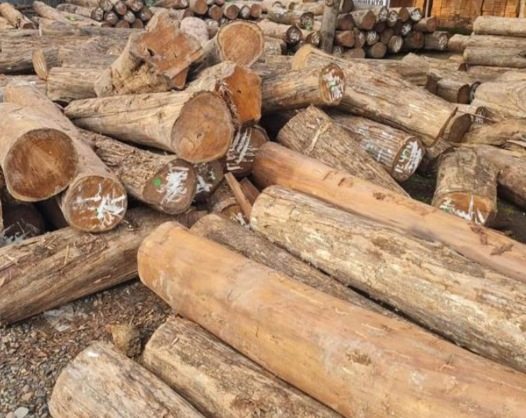
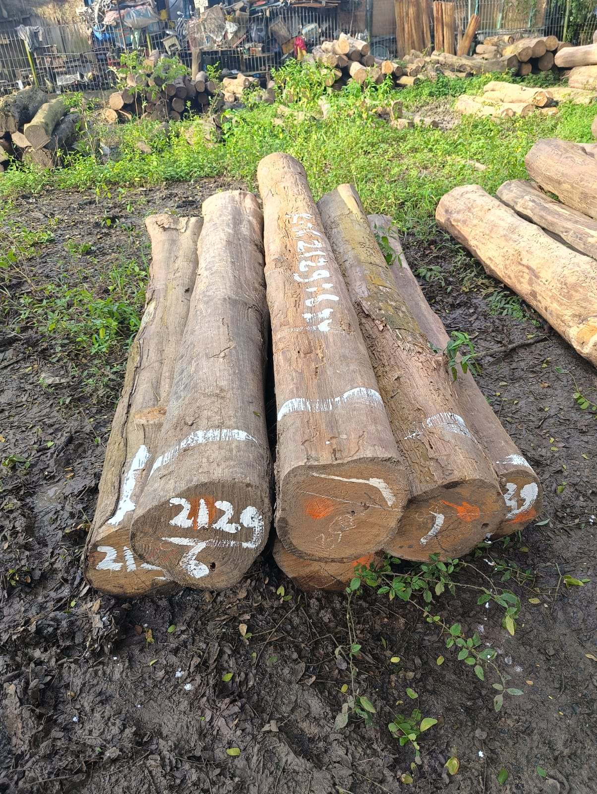
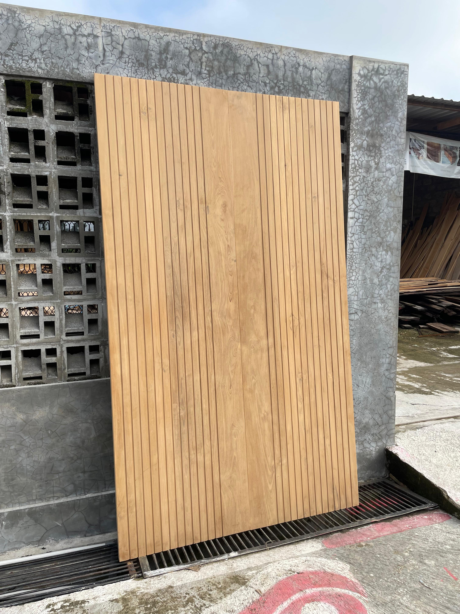
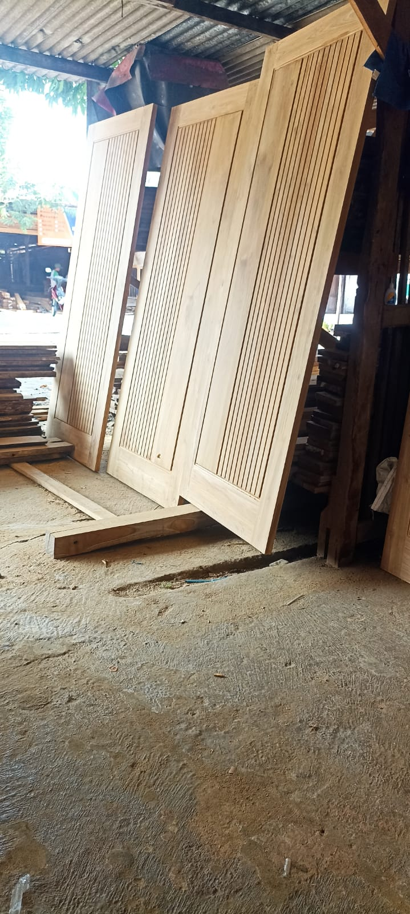
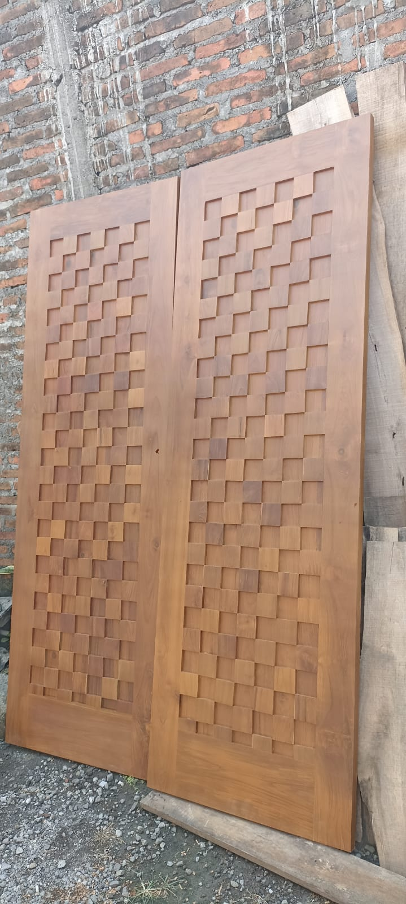
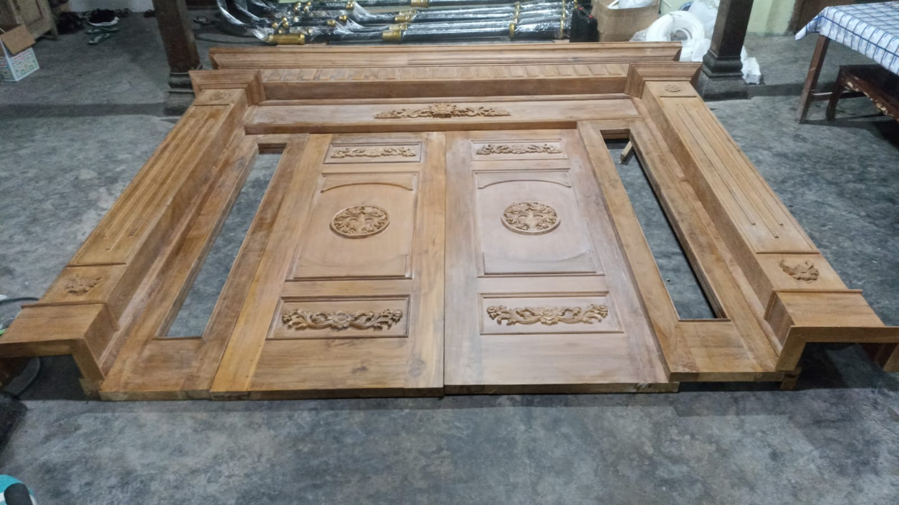
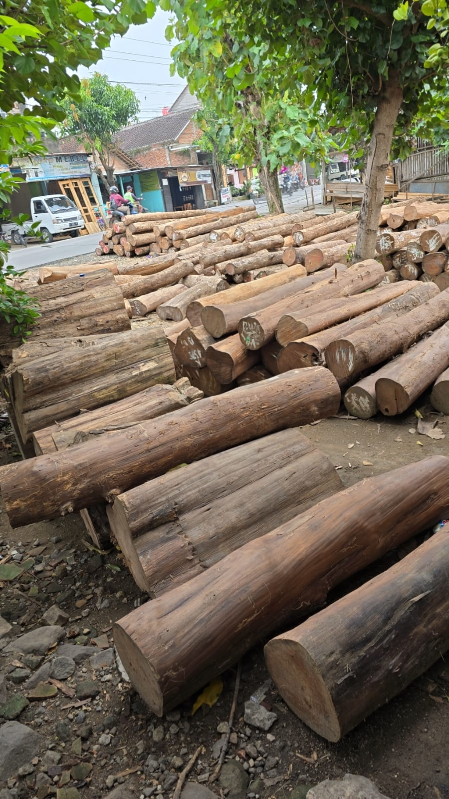

Produk Unggulan
Mebel berkualitas tinggi dengan sentuhan elegan dan modern. Menghadirkan layanan terbaik untuk produsen mebel dan kebutuhan bahan kayu mentah.


Setiap potongan kayu jati mengandung cerita alam yang mengagumkan — kini hadir dalam setiap produk kami.





Kokoh, kedap suara, dan tahan cuaca. Dibuat dari kayu jati tua pilihan dengan ketebalan optimal untuk keamanan hunian Anda.
Desain bersih dan modern untuk rumah kekinian. Serat jati alami tampil elegan dalam balutan estetika kontemporer.
Bebas tentukan desain, ukuran, dan finishing. Kami siap mewujudkan pintu impian Anda dengan detail yang presisi dan rapi.
Kokoh, presisi, dan tahan rayap. Kusen jati solid sebagai fondasi pintu dan jendela yang kuat untuk hunian Anda.
Suplai kayu jati mentah berkualitas untuk produsen mebel dengan harga pabrik yang bersaing.
Layanan finishing premium dan ukiran khas Jawa. Setiap detail dikerjakan oleh pengrajin berpengalaman.
Dengan pengalaman lebih dari 10 tahun, kami berkomitmen menghadirkan produk mebel kayu jati yang tidak hanya indah, tetapi juga tahan lama untuk generasi berikutnya.
Seluruh bahan baku bersumber dari perkebunan jati teregulasi dengan kualitas terjamin.
Setiap produk dikerjakan tangan oleh pengrajin berpengalaman dengan ketelitian tinggi.
Kami melayani pesanan custom sesuai dimensi, desain, dan finishing yang Anda inginkan.
Layanan pengiriman ke seluruh Indonesia dengan packaging khusus agar produk tiba sempurna.